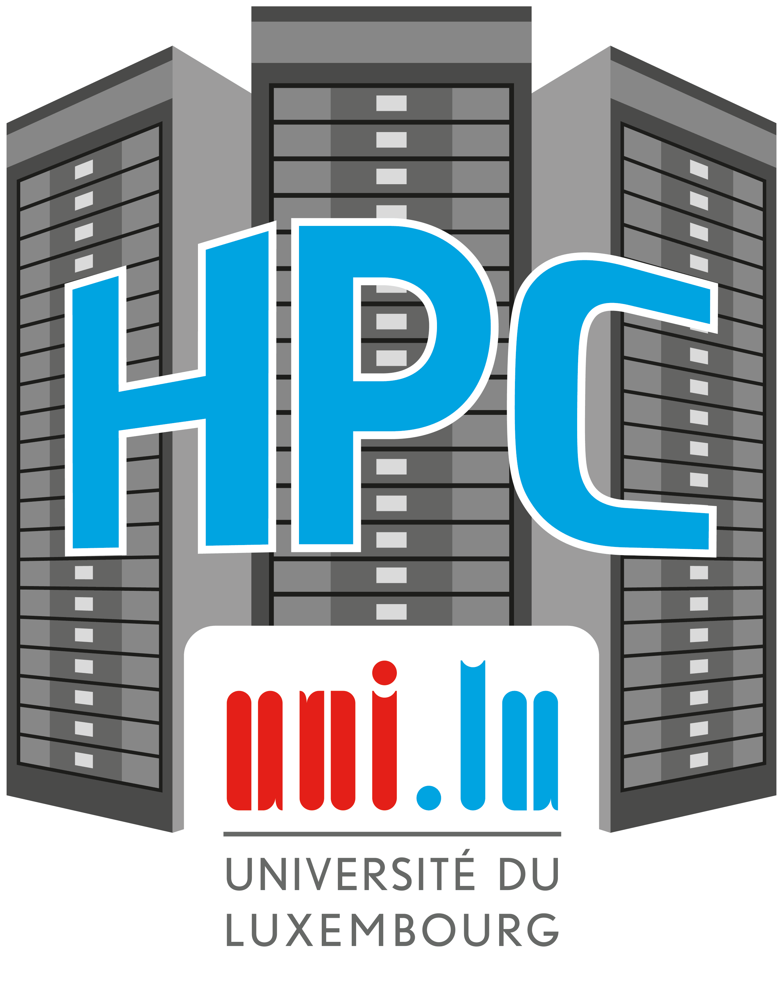
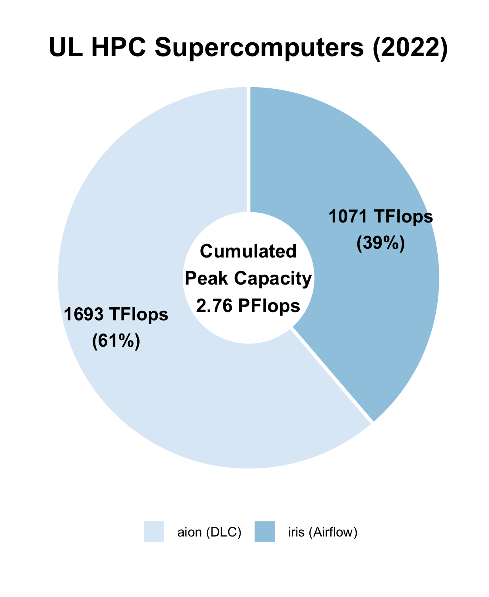
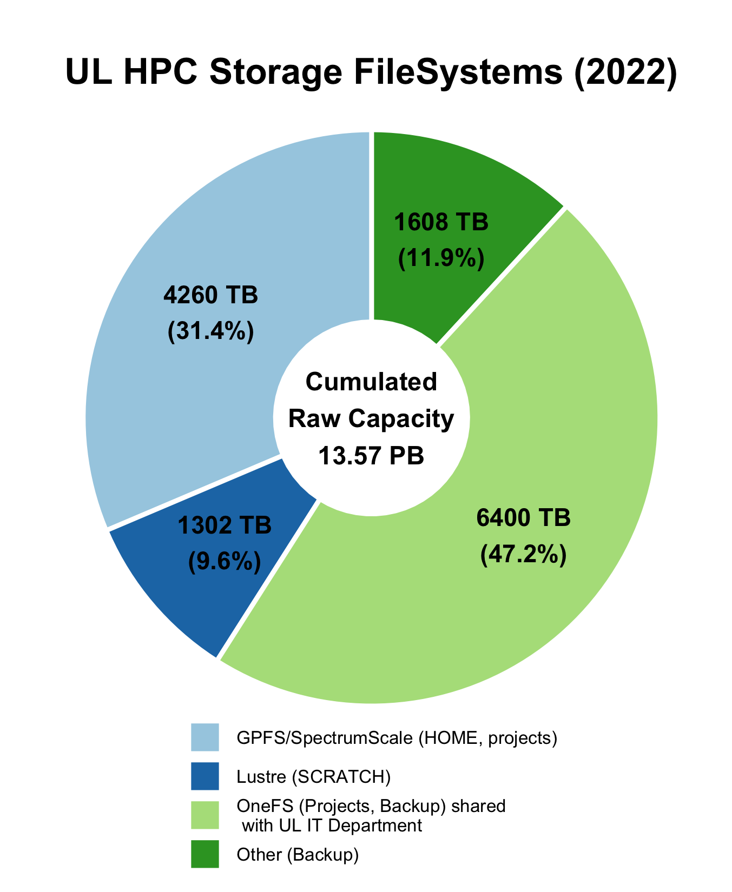

Getting Started on ULHPC Facilities¶

Welcome to the High Performance Computing (HPC) Facility of the University of Luxembourg (ULHPC)!
This page will guide you through the basics of using ULHPC's supercomputers, storage systems, and services.
What is ULHPC ?¶
HPC is crucial in academic environments to achieve high-quality results in all application areas. All world-class universities require this type of facility to accelerate its research and ensure cutting-edge results in time to face the global competition.
What is High Performance Computing?
If you're new to all of this, this is probably the first question you have in mind. Here is a possible definition:
"High Performance Computing (HPC) most generally refers to the practice of aggregating computing power in a way that delivers much higher performance than one could get out of a typical desktop computer or workstation in order to solve large problems in science, engineering, or business."
Indeed, with the advent of the technological revolution and the digital transformation that made all scientific disciplines becoming computational nowadays, High-Performance Computing (HPC) is increasingly identified as a strategic asset and enabler to accelerate the research performed in all areas requiring intensive computing and large-scale Big Data analytic capabilities. Tasks which would typically require several years or centuries to be computed on a typical desktop computer may only require a couple of hours, days or weeks over an HPC system.
For more details, you may want to refer to this Inside HPC article.
Since 2007, the University of Luxembourg (UL) has invested tens of millions of euro into its own HPC facilities to responds to the growing needs for increased computing and storage. ULHPC (sometimes referred to as Uni.lu HPC) is the entity providing High Performance Computing and Big Data Storage services and support for UL researchers and its external partners.
Led by Dr. Varrette for 15 years (until Aug 31, 2022), the ULHPC team (recently renamed "Digital Platform" and headed by Hyacinthe Cartiaux starting Sept 1st, 2022) manages several research computing facilities located on the Belval campus, offering a cutting-edge research infrastructure to Luxembourg public research while serving as edge access to bigger systems from PRACE or EuroHPC, such as the Euro-HPC Luxembourg supercomputer "MeluXina".
Warning
In particular, the ULHPC is NOT the national HPC center of Luxembourg, but simply one of its strategic partner operating the second largest HPC facility of the country.
The HPC facility is one element of the extensive digital research infrastructure and expertise developed by the University over the last years. It also supports the University’s ambitious digital strategy and in particular the creation of a Facility for Data and HPC Sciences. This facility aims to provide a world-class user-driven digital infrastructure and services for fostering the development of collaborative activities related to frontier research and teaching in the fields of Computational and Data Sciences, including High Performance Computing, Data Analytics, Big Data Applications, Artificial Intelligence and Machine Learning.
Reference ULHPC Article to cite
If you want to get a good overview of the way our facility is setup, managed and evaluated, you can refer to the reference article you are in all cases entitled to refer to when crediting the ULHPC facility as per AUP (see also the publication page instructions).
ACM Reference Format | ORBilu entry | ULHPC blog post | slides :
Sebastien Varrette, Hyacinthe Cartiaux, Sarah Peter, Emmanuel Kieffer, Teddy Valette, and Abatcha Olloh. 2022. Management of an Academic HPC & Research Computing Facility: The ULHPC Experience 2.0. In 6th High Performance Computing and Cluster Technologies Conference (HPCCT 2022), July 08-10, 2022, Fuzhou, China. ACM, New York, NY, USA, 14 pages. https://doi.org/10.1145/3560442.3560445
Supercomputing and Storage Resources at a glance¶
ULHPC is a strategic asset of the university and an important factor for the scientific and therefore also economic competitiveness of the Grand Duchy of Luxembourg. We provide a key research infrastructure featuring state-of-the-art computing and storage resources serving the UL HPC community primarily composed by UL researchers.
The UL HPC platform has kept growing over time thanks to the continuous efforts of the core HPC / Digital Platform team - contact: hpc-team@uni.lu, recently completed with the EuroHPC Competence Center Task force (A. Vandeventer (Project Manager), L. Koutsantonis).
ULHPC Computing and Storage Capacity (2022)
Installed in the premises of the University’s Centre de Calcul (CDC), the UL HPC facilities provides a total computing capacity of 2.76 PetaFlops and a shared storage capacity of around 10 PetaBytes.
How big is 1 PetaFlops? 1 PetaByte?
- 1 PetaFlops = 1015 floating-point operations per second (PFlops or PF for short), corresponds to the cumulative performance of more than 3510 Macbook Pro 13" laptops 1, or 7420 iPhone XS 2
- 1 PetaByte = 1015 bytes = 8*1015 bits, corresponding to the cumulative raw capacity of more than 1950 SSDs 512GB.
 
This places the HPC center of the University of Luxembourg as one of the major actors in HPC and Big Data for the Greater Region Saar-Lor-Lux.
In practice, the UL HPC Facility features 3 types of computing resources:
- "regular" nodes: Dual CPU, no accelerators, 128 to 256 GB of RAM
- "gpu" nodes: Dual CPU, 4 Nvidia accelerators, 768 GB RAM
- "bigmem" nodes: Quad-CPU, no accelerators, 3072 GB RAM
These resources can be reserved and allocated for the execution of jobs scheduled on the platform thanks to a Resource and Job Management Systems (RJMS) - Slurm in practice. This tool allows for a fine-grain analysis and accounting of the used resources, facilitating the generation of activity reports for a given time period.
Iris¶
iris, in production since June 2017, is a Dell/Intel supercomputer with a theoretical peak performance of 1082 TFlop/s, featuring 196 computing nodes (totalling 5824 computing cores) and 96 GPU accelerators (NVidia V100).
Iris Detailed system specifications
Aion¶
aion, in production since October 2020, is a Bull Sequana XH2000/AMD supercomputer offering a peak performance of 1692 TFlop/s, featuring 318 compute nodes (totalling 40704 computing cores).
Aion Detailed system specifications
GPFS/SpectrumScale File System ($HOME, project)¶
IBM Spectrum Scale, formerly known as the General Parallel File System (GPFS), is global high-performance clustered file system available on all ULHPC computational systems through a DDN GridScaler/GS7K system.
It allows sharing homedirs and project data between users, systems, and eventually (i.e. if needed) with the "outside world".
GPFS/Spectrumscale Detailed specifications
Lustre File System ($SCRATCH)¶
The Lustre file system is an open-source, parallel file system that supports many requirements of leadership class HPC simulation environments. It is available as a global high-performance file system on all ULHPC computational systems through a DDN ExaScaler and is meant to host temporary scratch data.
Lustre Detailed specifications
OneFS File System (project, backup, archival)¶
In 2014, the SIU, the UL HPC and the LCSB join their forces (and their funding) to acquire a scalable and modular NAS solution able to sustain the need for an internal big data storage, i.e. provides space for centralized data and backups of all devices used by the UL staff and all research-related data, including the one proceed on the UL HPC platform. A global low-performance Dell/EMC Isilon system is available on all ULHPC computational systems. It is intended for long term storage of data that is not frequently accessed. For more details, see Isilon specifications.
Fast Infiniband Network¶
High Performance Computing (HPC) encompasses advanced computation over parallel processing, enabling faster execution of highly compute intensive tasks. The execution time of a given simulation depends upon many factors, such as the number of CPU/GPU cores and their utilisation factor and the interconnect performance, efficiency, and scalability. InfiniBand is the fast interconnect technology implemented within all ULHPC supercomputers, more specifically:
- Iris relies on a EDR Infiniband (IB) Fabric in a Fat-Tree Topology
- Aion relies on a HDR100 Infiniband (IB) Fabric in a Fat-Tree Topology
For more details, see ULHPC IB Network Detailed specifications.
Acceptable Use Policy (AUP)¶
There are a number of policies which apply to ULHPC users.
UL HPC Acceptable Use Policy (AUP) [pdf]
Important
All users of UL HPC resources and PIs must abide by the UL HPC Acceptable Use Policy (AUP). You should read and keep a signed copy of this document before using the facility.
Access and/or usage of any ULHPC system assumes the tacit acknowledgement to this policy.
ULHPC Accounts¶
In order to use the ULHPC facilities, you need to have a user account with an associated user login name (also called username) placed under an account hierarchy.
- Get a ULHPC account
- Understanding Slurm account hierarchy and accounting rules
- ULHPC Identity Management (IPA portal)
- Password policy
- Usage Charging Policy
Connecting to ULHPC supercomputers¶
MFA is strongly encouraged for all ULHPC users
It will be soon become mandatory - detailed instructions will be provided soon.
Data Management¶
- Global Directory Structure
- Transferring data: Tools and recommendations to transfer data both inside and outside of ULHPC.
- Quotas and Purging
- Understanding Unix File Permissions
User Environment¶
Info
$HOME, Project and $SCRATCH directories are shared
across all ULHPC systems, meaning that
- every file/directory pushed or created on the front-end is available on the computing nodes
- every file/directory pushed or created on the computing nodes is available on the front-end
Computing Software Environment¶
The ULHPC Team supplies a large variety of HPC utilities, scientific applications and programming libraries to its user community. The user software environment is generated using Easybuild (EB) and is made available as environment modules through LMod.
- ULHPC Modules Environment
- ULHPC Supported Software List.
- Available modules are reachable from the compute nodes only via
module avail
- Available modules are reachable from the compute nodes only via
- ULHPC Easybuild Configuration
Software building support
If you need help to build / develop software, we encourage you to first try using Easybuild as a recipe probably exist for the software you consider. You can then open a ticket on HPC Help Desk Portal and we will evaluate the cost and effort required. You may also ask the help of other ULHPC users using the HPC User community mailing list: (moderated): `hpc-users@uni.lu.
Running Jobs¶
Typical usage of the ULHPC supercomputers involves the reservation and allocation of computing resources for the execution of jobs (submitted via launcher scripts) and scheduled on the platform thanks to a Resource and Job Management Systems (RJMS) - Slurm in our case.
Slurm on ULHPC clusters Convenient Slurm Commands
- Rich set of launcher scripts examples
- Fairshare
- Job Priority and Backfilling
- Job Accounting and Billing
Interactive Computing¶
ULHPC also supports interactive computing.
Getting Help¶
ULHPC places a very strong emphasis on enabling science and providing user-oriented systems and services.
Documentation¶
We have always maintained an extensive documentation and HPC tutorials available online, which aims at being the most up-to-date and comprehensive while covering many (many) topics.
ULHPC Technical Documentation ULHPC Tutorials
The ULHPC Team welcomes your contributions
These pages are hosted from a git repository and contributions are welcome! Fork this repo
Support¶
ULHPC Support Overview Service Now HPC Support Portal
Availability and Response Time
HPC support is provided on a volunteer basis by UL HPC staff and associated UL experts working at normal business hours. We offer no guarantee on response time except with paid support contracts.
Consulting¶
Expert-level service and support can be provided by the University HPC staff in the form of pools of 4-hour specialized help, at 480€ VAT excluded (equivalent to 120€ per hour expert rate EA). Service and support activities include but are not limited to HPC training on facilities utilization, software installation, HPC workflow development.
For more details: see ULHPC Consulting Services
-
The best MacBook Pro 13" in 2020 is equiped with Ice Lake 2 GHz Intel Quad-Core i5 processors with an estimated computing performance of 284.3 Gflops as measured by the Geekbench 4 multi-core benchmarks platform, with SGEMM ↩
-
Apple A12 Bionic, the 64-bit ARM-based system on a chip (SoC) proposed on the iPhone XS has an estimated performance of 134.7 GFlops as measured by the Geekbench 4 multi-core benchmarks platform, with SGEMM ↩